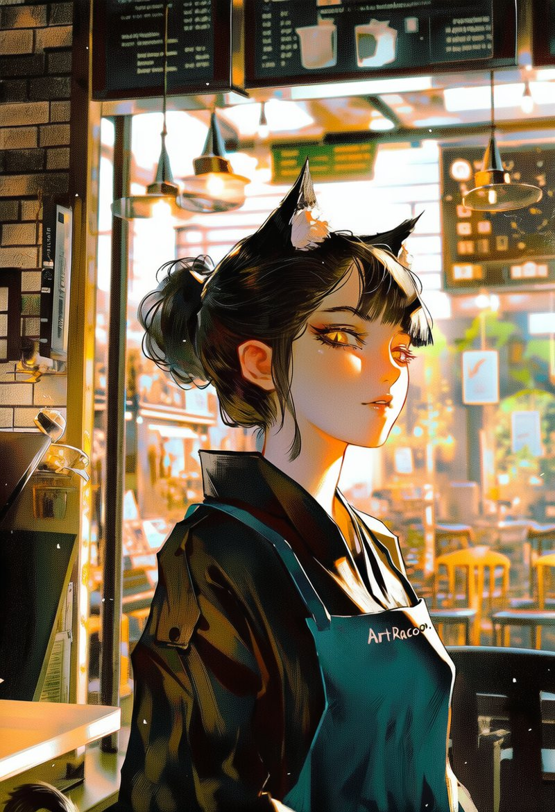
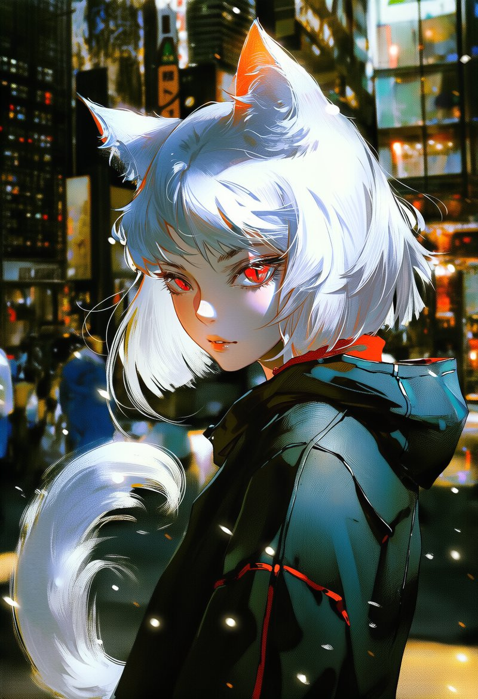
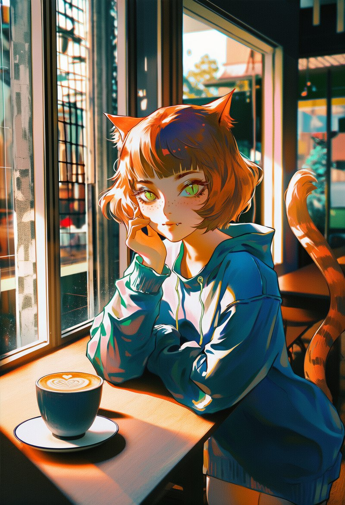
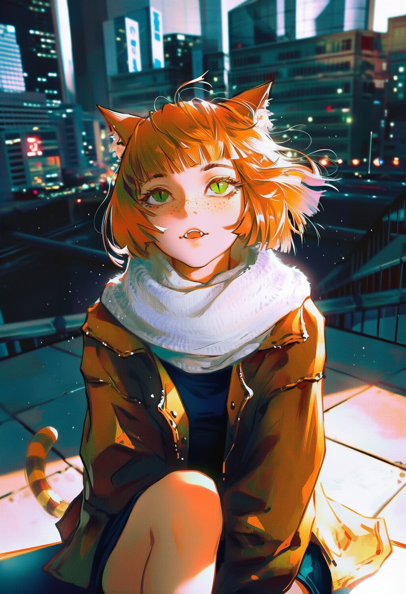

🦝 ArtRaccoon studio
Аниме арт без лишнего шума
Мы — небольшая студия ArtRaccoon. Рисуем атмосферные аниме-арты: девушки с кошачьими ушками, уютные кафе, ночной город, фэнтези. Все персонажи — взрослые.
Галерея в TelegramБот @RaccoonasBot



English
ArtRaccoon is a small studio making atmospheric SFW anime art: cat-eared girls, cozy cafés, night cities and fantasy. All characters are adults. Follow our Telegram Gallery or try our art bot @RaccoonasBot. We also share our Gallery art on Pinterest.